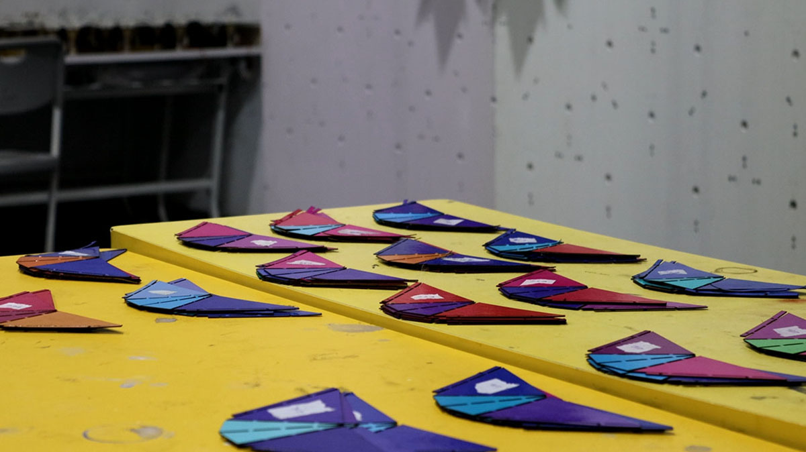
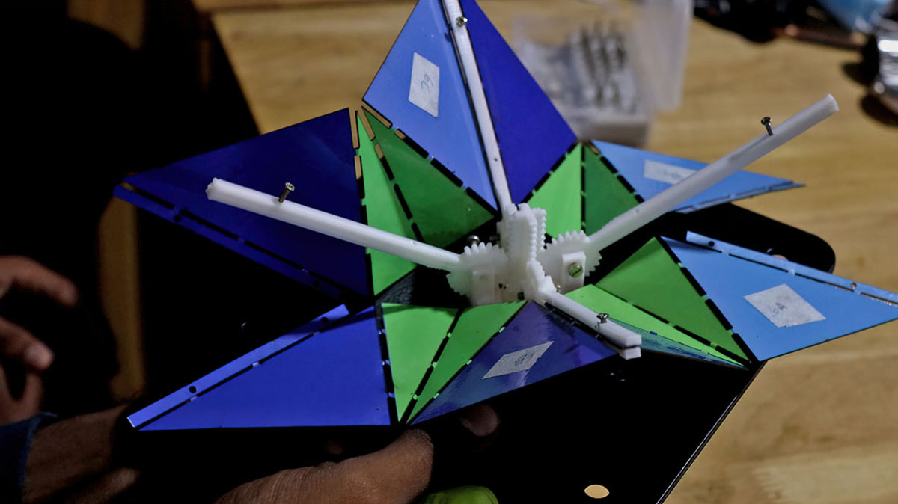

Bionic Bloom is an interactive installation which was developed as part of an academic exercise along with the students of Crescent School of Architecture.
The installation consists of 90 mechanical modules / blooms which can be individually controlled to create mesmerizing patterns.
Bionic Bloom is an interactive art installation that imitates the shape and movement of a floral bloom. It is the result of a collaborative effort with "Digital Intuition" as part of an academic exercise at the Crescent School of Architecture. The project brief was to create an interactive installation that would involve and engage the students of the university, and introduce them to advanced technologies and fabrication processes that are outside the traditional domain of architecture, yet closely linked to design and architecture.
The development of the mechanism for the blooms involved an iterative process that aimed to achieve optimal dynamics while considering the constraints of the available motors in the market. Over the course of four weeks, we explored a range of design and fabrication technologies, along with the students, including 3D printing, computer vision, computational design, and programming and interfacing with microcontrollers.
Fabrication & Mechanics
An early prototype of the working mechanism
The design process for the mechanism involved a series of iterations, in which we experimented with different mechanisms, materials, motors, and sizes. We determined early on that servo motors were the best choice for the mechanism, primarily because they are simpler to implement from an electrical standpoint, and they are cost-effective, with the added benefit of self-correction. While stepper motors would have been the ideal choice for long-term use, their lack of self-correction (without a rotary encoder), high initial costs, and complex wiring/power systems made them too complicated to implement within the project's allotted time. We selected the MG996 servo motor with approximately 9.4kg/cm of torque, and the mechanism was based on the specifications of this particular motor.
For control electronics, we employed the Arduino MEGA. With up to 15 PWM pins, each MEGA could control up to 15 servo motors, allowing us to use 6 MEGA's to control 90 motors. All the Arduinos are connected to a single PC, which sends control data via USB serial. While ethernet cables are preferred for data output from the computer, USB cables were sufficient for this installation, given the length of the cable runs and the maximum number of slave devices used.
Timelapse of 3D printed framework
The mechanics were developed based on the chosen motor, servo motors, which allow for about 180 degrees of rotational motion. Through experimentation with various gear mechanisms, the current design was created using a combination of radial and linear gear systems to rotate four prongs simultaneously.
For the petals, a range of flexible materials were considered, including compliant mechanisms, origami folds, and micro-hinged mechanisms, but ultimately, cardboard paper with vinyl stickers was selected for its flexibility and long-term durability. We were very delighted with the performance and appearance of this material. The petal colour scheme was generated computationally, and fabrication was optimized using computational algorithms in Grasshopper. To minimize material waste and time during laser cutting, packing algorithms were employed for maximum efficiency.
Laser cut MDF panels


Petals : Pre-assembly and during the assembly process
The mechanical framework was designed to be optimized for 3D printing in parts. The initial prototype of the mechanism consisted of 11 individual printed parts that were manually assembled with fasteners. The design of this mechanism is continuously being developed to reduce assembly times and increase the durability of the parts by identifying potential points of wear and tear. The ultimate goal is to produce injection-moulded parts that can significantly reduce production time, although this would require higher initial development costs. The MDF panels used as a base for grouping the mechanisms in sets of 4 were cut using a CO2 laser cutter, as were the pieces of cardboard used for the bloom's petals. The entire installation rests on a plywood base mounted on a steel framework.
Software and Code
Converting greyscale pixel values to control the servos
The control data for the motors are generated by converting the greyscale pixel values in a 15px X 6px video file into rotational motion for the 90 servo motors. Each pixel represents one motor, and its sampled value determines the degree of rotation for the motor. The result is a captivating display of synchronized motion that can be generated from any animation, whether it's created in real time or pre-rendered. To control the motors, we use 6 Arduino MEGA boards that receive the rotational data via USB serial communication.
Handtracking data to control servos
On our installation, the user controls the blooms through hand tracking with a 'Kinect One' camera. With its excellent open-source libraries, the camera easily generates user skeleton data from a depth image. However, there were some challenges we faced in implementing the hand tracking. We had to figure out what to do when multiple people were in the frame or when a user accidentally moved their hand. To solve these issues from a UI standpoint, we marked a spot on the floor where users must stand to control the blooms, and only their right hand's fully open palm facing the camera can control the blooms. We use the hand's 'x' and 'y' coordinates to control a circle that's mapped onto the animation clip. Additionally, the depth of the hand from the camera controls the circle's size, allowing users to control the circle's size by pushing their hand towards the camera.
Future Development
The blooms in motion
We're always looking for ways to improve our prototype build, both in terms of mechanics and electronics. In fact, we plan on creating a production-ready version of the installation in the near future. We're also working on making the system modular, so that more modules can be added to expand the artwork. Currently, the installation is powered by a laptop or mini PC, but we're exploring the possibility of running it on a Raspberry Pi to make it more portable.
We see a lot of potential in Bionic Blooms, and we're open to collaboration and partnerships to bring it to production. If you have any ideas or suggestions, we'd love to hear from you.